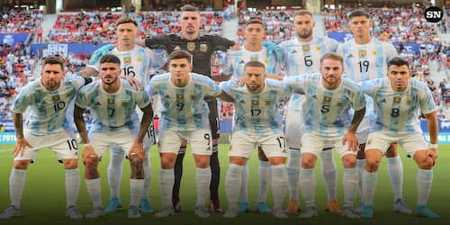
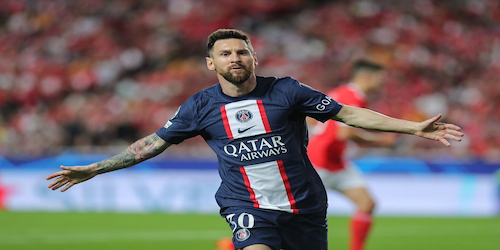
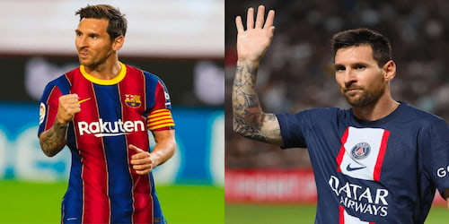
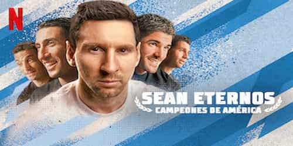
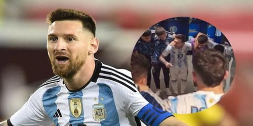
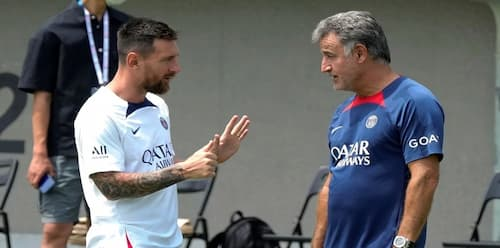

BIENVENIDOS A LA FANPAGE DE LIONEL MESSI
Somos fanaticos de Leo, al igual que millones de personas en el mundo.
Esta web esta hecha para que disfrutes de la carrera del 10
Vas a encontrar estadisticas, noticias, fotos, videos y mucho mas.
ÚLTIMO PARTIDO
1 - 2
02/11/2022
Allianz Stadium
UEFA Champions League
Messi: 90' jugados
1 asistencia
PROXIMO PARTIDO
-
06/11/2022 - 09:00hs
Stade Yves Allainmat
Ligue 1
NOTICIAS SOBRE LEO
Messi: "No somos los máximos candidatos a ganar el Mundial"
El capitan argentino declaro en una entrevista que no creen ser los máximos candidatos. "Yo creo que llegamos de gran manera al Mundial, aun asi debemos tener tranquilidad. Hay selecciones muy fuertes como Brasil o Francia. Nosotros debemos ir partido a partido, con tranquilidad. Confio plenamente en este grupo y creo que vamos a hacer un gran Mundial" declaro Messi.
GOLAZO DE MESSI ANTE EL BENFICA
Gran partido por fase de grupos de Champions League entre el PSG y el equipo portugues. Messi convirtio un golazo desde el borde del area tras una gran combinacion con Neymar y Mbappe. Aun asi el gol no le alcanzo para llevarse los tres puntos. PSG esta primero en el grupo, seguido por el Benfica, la Juve se encuentra en puesto de Europa League.
Ver resumen del partido¿MESSI VUELVE AL BARCELONA EN 2023?
Asi lo aseguraba la periodista argentina Verónica Brunati, muy cercana al entorno del jugador. Varios periodistas han desmentido esta informacion, incluido Fabrizio Romano, este ultimo asegura que el Barsa ha iniciado sus acercamientos con el entorno de Leo, pero que el no quiere decidir aun.
Se estreno la serie
"Sean Eternos: Campeones de America"

Ya esta disponible la serie documental sobre la Copa America 2021. La podes ver por Netflix. Esta serie nos muestra a Leo y a toda La Scaloneta como nunca antes la vimos. Que mejor que esto para matar la manija de mundial que hay! Anda a mirarla ya.
LA EMOTIVA ARENGA DE MESSI ANTES DE LA FINAL EN BRASIL
Como adelanto de la serie, Netflix mostro la arenga que dio Messi en la previa de la final contra Brasil, es totalmente emocionante escucharlo hablar a Leo, por todo lo que la lucho para conseguir la copa y la mochila que cargaba.
MIRA LA ARENGA ACÁMESSI PIDE AL PSG QUE LO LIBERE EL 07/11
Leo le pidio a Galtier que lo libere despues del partido del proximo domingo contra Lorient. El capitan argentino estara a disposicion de Scaloni a partir del proximo Lunes. Gran muestra de compromiso de Lionel con la selección. Sera el primero de La Scaloneta en estar a disposicion. Les recordamos que el proximo 22 de Noviembre es el debut en Qatar contra Arabia Saudita.